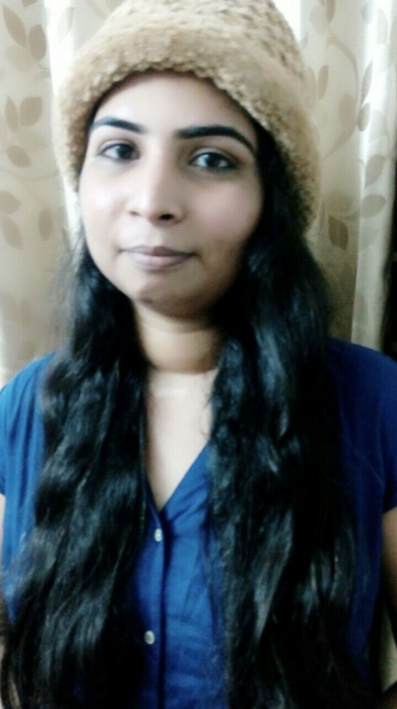

Hello... I'm Vaishali Thakkar.
I am an Open Source enthusiast and am working as a Linux kernel engineer. I'm also associated with open source program RGSoC as a co-organizer.
In my free time, I like to help newbies getting started with the Linux Kernel. I often receive requests from students for conducting 'Getting started with the Linux Kernel hacking' workshop at their universities. So, if you are one of them then please fill out this form and I'll get back to you on the same.
Sometimes I also write on Quora, Medium and my blog. Comment directly on posts or answers if you have any doubts on the content posted by me. I'm often active on either Twitter or Instagram. Though best way to contact me is always an email.